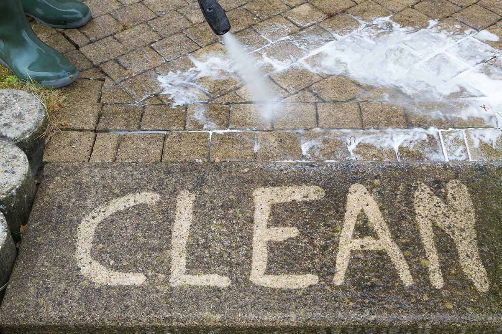

Pressure Washing Services
Give your home a fresh, clean look with professional pressure washing in Austin and the Hill Country. Our team removes years of dirt, mold, mildew, algae, and grime caused by Central Texas weather. Whether it’s your house siding, driveway, deck, or patio, we make it look brand new again.

Price
$150–$400 depending on house size and surface type. A typical 1,500 sq ft single-story home usually runs around $250. Larger two-story homes or properties with heavy mold can reach $350–$400.

Benefits of Pressure Washing
- Boosts Curb Appeal: Instantly makes your Austin home look cleaner and more attractive.
- Prevents Costly Damage: Removes mold, mildew, and dirt before they damage siding, brick, or concrete.
- Increases Property Value: Clean exteriors help your home stand out in neighborhoods from West Lake to Round Rock.
- Healthier Home: Eliminates mold and allergens that thrive in Central Texas humidity.

Our Pressure Washing Process
- Assessment: We inspect your property and determine the best pressure levels, cleaning solutions, and techniques for each surface (siding, brick, concrete, etc.).
- Preparation: We protect landscaping, outdoor furniture, windows, and electrical outlets from overspray.
- Pressure Washing: Using commercial-grade equipment and eco-friendly detergents, we thoroughly clean all surfaces while adjusting pressure to avoid damage.
- Final Inspection: We walk the property with you to ensure every area meets our high standards before we leave.

Frequently Asked Questions
How much does pressure washing cost in Austin?
Professional pressure washing in Austin typically costs between $150 and $400. A standard 1,500 sq ft single-story house usually runs $225–$275. Two-story homes, heavy mold buildup common in Cedar Park and Leander, or larger driveways and patios can bring the price to $350–$400. We always provide an exact quote after seeing your property.
Do you offer pressure washing in Cedar Park, Leander, and Round Rock?
Yes! We provide pressure washing services throughout Austin and all surrounding areas including Cedar Park, Leander, West Lake Hills, Bee Cave, South Austin, North Austin, East Austin, Bastrop, Kyle, Georgetown, Pflugerville, and Round Rock.
How often should I pressure wash my house in Austin?
Most Austin homeowners should pressure wash their house 1–2 times per year. Because of our humid climate and frequent rain, mold and mildew grow fast. Homes in shaded areas or near trees often need it twice a year to stay looking clean.
Is pressure washing safe for my house siding?
Yes — when done by professionals. We use the correct pressure and cleaning solutions for each surface (vinyl, brick, stucco, fiber cement, etc.) so we never damage your exterior. DIY pressure washing often causes costly damage in Austin homes.
Does pressure washing remove black mold and algae?
Absolutely. We specialize in removing stubborn black mold, green algae, and dirt streaks that are very common on Austin-area homes due to the heat and humidity.
How long does pressure washing a house take?
A typical house in Austin takes 2–4 hours depending on size and condition. Driveways and patios usually take 30–90 minutes. We work efficiently and clean up when finished.
Can you pressure wash my driveway and sidewalks?
Yes, we offer full exterior cleaning including driveways, sidewalks, patios, decks, and fences. Many customers in Bee Cave, West Lake, and Pflugerville combine house and driveway washing for the best results.
Will pressure washing damage my plants or landscaping?
We take extra care to protect your plants, flowers, and landscaping. We cover sensitive areas and use low-pressure settings near vegetation.
Is pressure washing worth it before selling my home in Austin?
Yes — it’s one of the most cost-effective ways to increase curb appeal and perceived value. Clean exteriors make a big difference in competitive neighborhoods across Round Rock, Georgetown, and Bastrop.
What surfaces can you pressure wash?
We safely pressure wash house exteriors, brick, vinyl siding, concrete driveways, patios, decks, fences, and sidewalks. We adjust our technique for each material.
How soon can you schedule pressure washing in the Austin area?
We can usually schedule pressure washing within 1–5 business days depending on the season. Spring and fall are our busiest times in Central Texas.

Get Your House Pressure Washed Today!
Don’t let dirt, mold, and grime dull your home’s appearance. Contact Moody Home Services for fast, professional pressure washing in Austin, Cedar Park, Leander, Round Rock, Pflugerville, and surrounding areas.